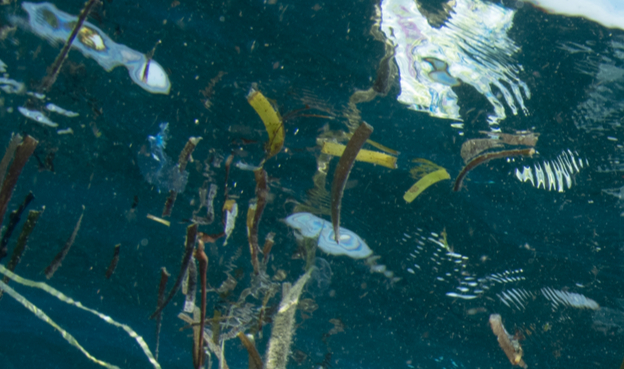

Sostenibilidad en Acción
En nuestro sitio encontrarás información sobre la implementación práctica de medidas y acciones para alcanzar un desarrollo sostenible.
¿Qué es Sostenibilidad en Acción?
Esto puede incluir desde la implementación de tecnologías más eficientes y limpias en el transporte, hasta la adopción de prácticas de consumo más sostenibles en el hogar, el uso de energías renovables, la reducción de residuos, la agricultura sostenible, la conservación de recursos naturales, la promoción de la igualdad y la justicia social.
En el ámbito del transporte, la sostenibilidad en acción puede incluir la promoción del transporte público, bicicletas y caminar, la reducción de la dependencia del combustible fósil, la planificación de la movilidad urbana, y el desarrollo de vehículos eléctricos y híbridos.
En el hogar, la sostenibilidad en acción puede incluir la adopción de prácticas de ahorro de energía, como la instalación de paneles solares, la mejora de la eficiencia energética, el uso de electrodomésticos y aparatos de bajo consumo, y la adopción de prácticas de consumo sostenible, como comprar productos locales y sostenibles, y reducir el desperdicio de alimentos.
Además, las energías verdes son una forma de reducir la dependencia de los combustibles fósiles y contribuir a la lucha contra el cambio climático.
En resumen, la sostenibilidad en acción se refiere a la toma de decisiones y acciones concretas para alcanzar un desarrollo sostenible en diferentes ámbitos, tales como el transporte, la energía, el hogar, la agricultura, la conservación de recursos naturales, y la promoción de la justicia social.
¿Cómo puedo contribuir a un mundo más sostenible?
Hay muchas formas en las que puedes contribuir a un mundo más sostenible:
- Utiliza TP o medios de transporte más sostenibles, como la bicicleta o el transporte eléctrico./li>
- Instala paneles solares o sistemas de energía eólica en tu hogar para reducir tu consumo de energía.
- Apaga las luces y los electrodomésticos cuando no los estés utilizando.
- Recicla y reutiliza en lugar de tirar a la basura.
- Compra productos con envases y empaquetes biodegradables.
- Apóyate en agricultores y comerciantes locales para reducir la huella de carbono de tu consumo.
Hay muchas formas de contribuir a un mundo más sostenible. ¡Haz tu parte y comienza hoy mismo!
Nuestro planeta



Síguenos en redes sociales
Visítanos